洽洽案例解析华与华说：“所有的事都是一件事。”洽洽案例是华与华在快消行业“包装设计+产品战略+企业战略+品牌营销”一体化的代表案例。 20 年来洽洽一直是中国瓜子炒货行业的领军企业，近两年，又一跃成为中国坚果行业的领军品牌。华与华与洽洽合作开始于 2019 年 2 月，同年 7 月 18 日，洽洽首次对外发布全新品牌战略“洽洽掌握关键保鲜技术”。与此同时，华与华为洽洽设计的全新产品包装也同步上市发售。新包装上市首月，销售同比提升 120 %，销量、市值双双破新高！
▲洽洽小黄袋产品货架实拍图
2020 年，相继推出：洽洽早餐每日坚果燕麦片和洽洽益生菌每日坚果两支战略级新品，两支产品一经上市再次大获成功。其中洽洽益生菌每日坚果试销首月业绩突破 1200 万，洽洽早餐销售环比 200 %增长；用“三架马车”全面领跑洽洽坚果的百亿事业版图。今年 9 月，洽洽股价再创新高，上升至每股 71 . 17 元（ 2019 年 2 月洽洽股价每股为 17 . 8元）， 2 年内股价翻了 4 倍，市值也突破 355 亿大关。
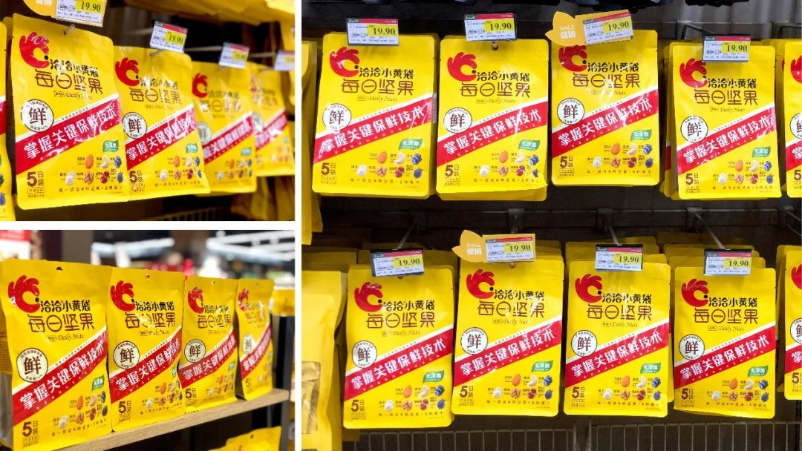
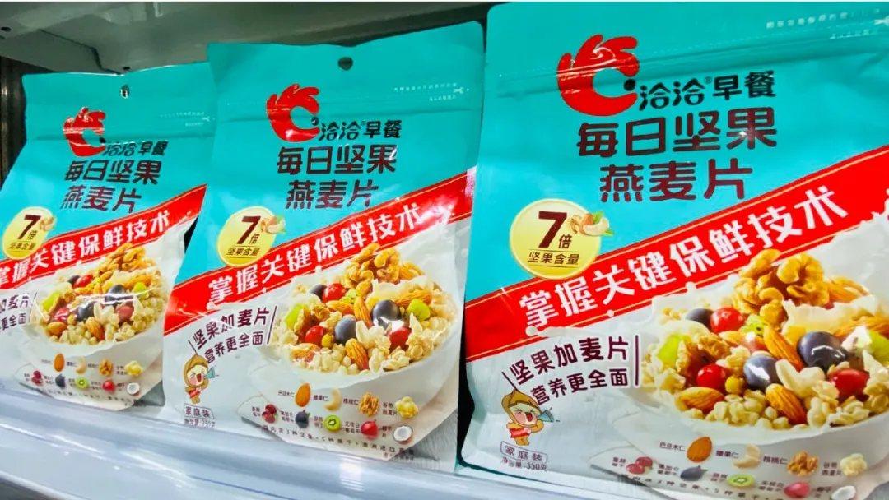
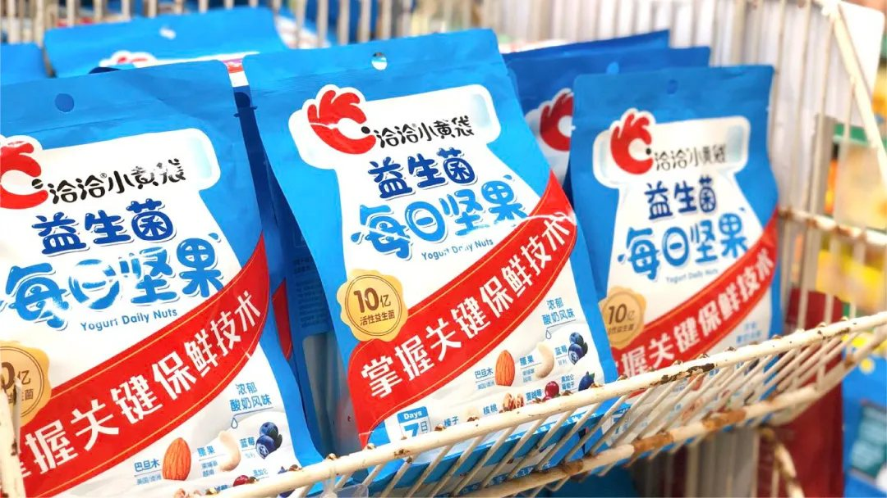
▲两大新品货架实拍图及 2020 年 8 月 28 日洽洽当日股价
这两年间洽洽和华与华究竟做了什么，能在巨头涌现、错综复杂的坚果市场博弈中迅速锁定胜局，一战而定，成功拿下坚果第一品牌呢？接下来，将通过本文为你一一讲解。学习本文，你将学到：一、实现快消品企业战略目标的方法1 ）华与华方法——产品战略三角模型2 ）华与华方法——战略围棋模型：金角、银边、草肚皮二、实现快消品企业销售增长的方法1 ）找准快消品行业的战略重心与决胜点，一战而定2 ）用“词语”和“符号”的技术重新设计产品包装3 ）咨询公司不仅在客户那里接受任务，也要主动给客户立课题、派任务4 ）充分发挥咨询公司的跨行业经验华与华咨询服务工作的两个起点：找对课题，找到真因在我们的工作中，有两个关键：第一，要找对课题。很多时候我们在定课题的时候就错了，如果你的课题都立错了，不管你怎么研究，投入多少精力，都是白忙活。第二，确定课题之后，要把握现状，找到真因。只有找到真因，才能够制定对策。所以，华与华的咨询服务也是从评估客户的课题开始的。2019 年初，洽洽找到我们的时候给了我们两个课题：
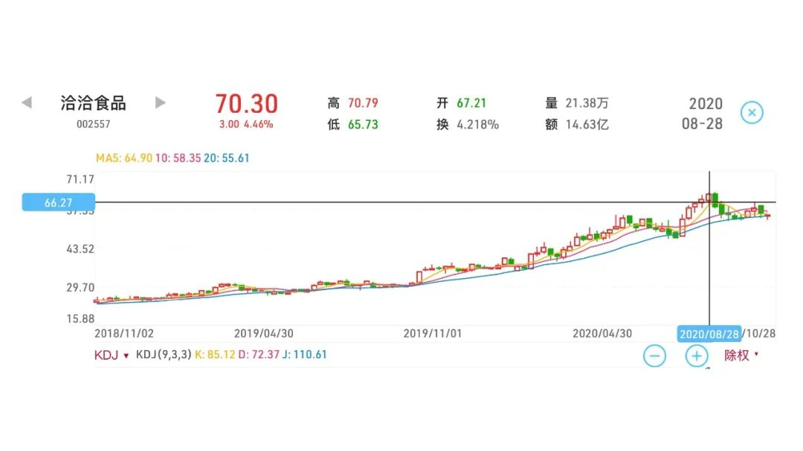
一是洽洽坚果该怎么定位？二是如何解决洽洽在消费者心智当中是瓜子的问题？其实两个问题本不存在，因为心智和定位都不是解决问题的真因。我们所要真正解决的是洽洽小黄袋每日坚果的 4P 问题：产品、价格、渠道、推广。
本次重点是解决洽洽小黄袋 4P 中“产品”和“推广”的问题。那么先来看如何解决快消品企业 4P 中“产品”的问题？——用包装来解决。包装设计就是产品的再开发，也是解决产品问题的关键。
包装设计是快消品牌营销的战略重心与决胜点
在华与华，有一个原则：一企一策，一事一议。在我们看来，每一件事情都有它不同的战略重心和决胜点，每一个行业都不一样。餐饮业、快消品、互联网、房地产等，它的战略重心和决胜点是不一样的。
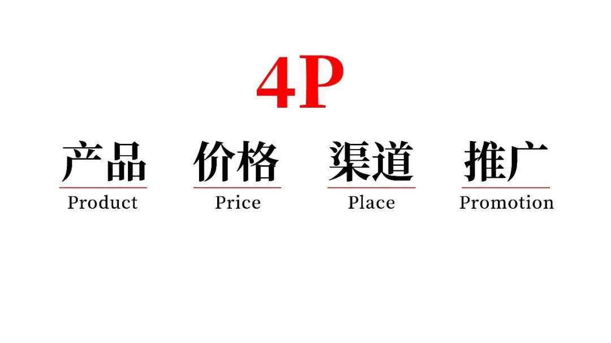
对于快消品行业来说，包装设计是品牌营销的战略重心和决胜点。商品即信息，包装即媒介，一个好的包装设计，胜过 1 亿广告费。而问题就在于很多快消品企业没有在包装设计上下功夫，甚至完全不理解什么是包装设计，就在广告上投入了大量的金钱，造成惊人的浪费，全是无用功，自己还不知道。我们用洽洽给大家举个例子：洽洽每年要生产并销售数十亿袋产品，而这数十亿袋产品包装就是数十亿个免费的广告位。想象一下，你投资户外广告，电梯广告才能覆盖多少人，能有幸再看你广告一眼的又剩下多少？而我们的包装是能够完完全全和消费者 100 %触达的！所以包装的媒体功能，比任何电视或平面媒体都强大，也是快消品牌广告创新的关键动作。那找到行业的战略重心与决胜点后，如何用超级符号方法一战而定？一切传播都是符号的编码和解码，超级符号就是营销传播的一切华与华的创意和设计都不是在办公室里头脑风暴出来的，而是必须要去到现场，发现并总结出来的。用到的就是我们华与华方法三现主义。
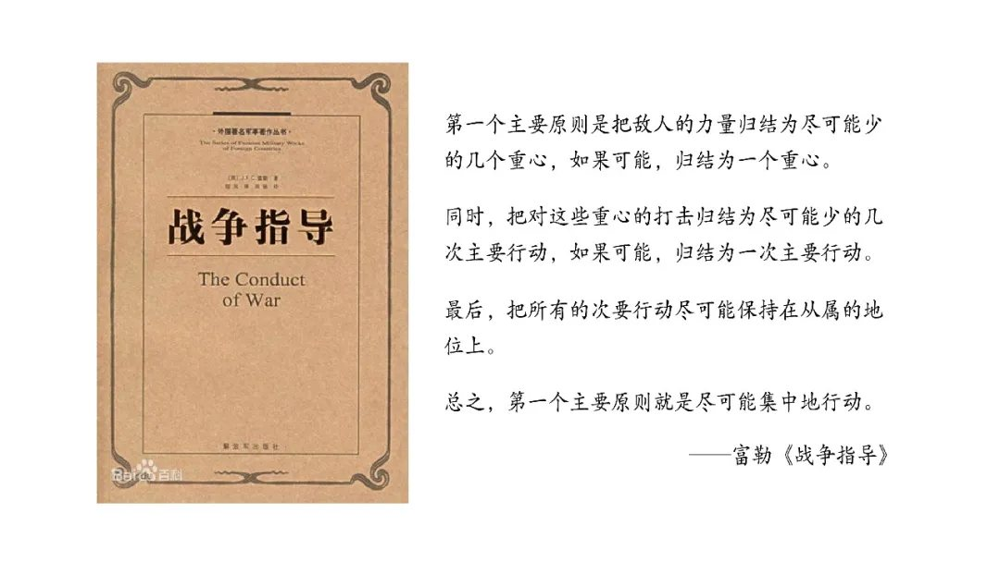
在华与华工作的“规矩”是：不能做销售冠军，就没有资格写文案，不会施工，就没有资格做设计。我们做市场调研不是去找调研公司，也不是搞一个消费者座谈会，最有效的调研方法就是我们去到现场做销售员，自己售卖，而售卖的时间也不能只是售卖一个下午，必须要有足够长的时间，最好是 7 天。因此洽洽项目负责人：黄慧婷、杨浚祥连续 7 天，每天 12 小时扎根在销售现场卖货，观察消费从经过货架、注意货架、上前询问、试吃，再到最终购买的全部过程。现场反复测试产品的每一句购买理由，而他们的销售业绩是原来售货员业绩的 6 . 2 倍。
▲华与华洽洽项目负责人：黄慧婷、杨浚祥连续 7 天在上海中山公园家乐福卖场售卖
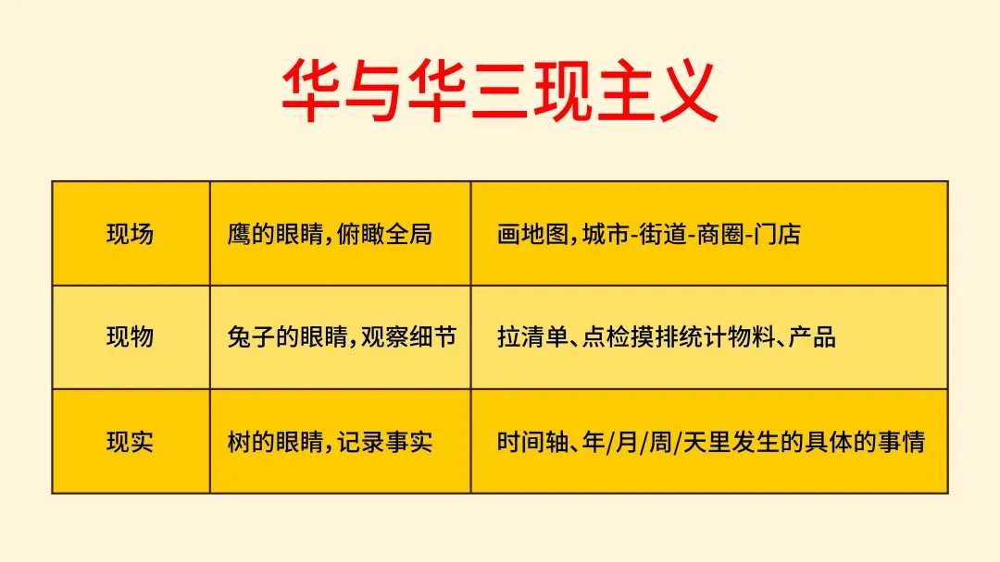
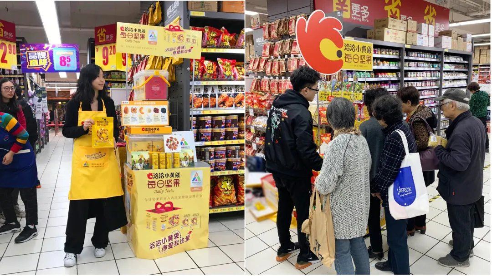
经过在一线卖场连续 7 天，每天 12 个小时的定点观察与亲身售卖，我们发现消费者对每日坚果这一全新品类的认知是模糊的，竟然有 83 %的消费者竟然问的最多的问题是：这里面到底有什么？
当你坐在电脑前头脑风暴，以为自己想到了很好的创意去跟消费者沟通时，却发现人家连你是卖什么的都不知道！所以我们在包装主画面上清晰列明了“每一袋内含 4 种坚果加 3 种果干”的信息，并且附上了有食欲感的图片和说明，让消费者一看就知道这是买什么的，里面到底有什么，让消费者不用思考，对号入座。
同时，我们发现原有洽洽小黄袋每日坚果的包装信息编码并不完整，缺少主要信息的传达，而传达的过程经过了损耗，又传达不到消费者那里。
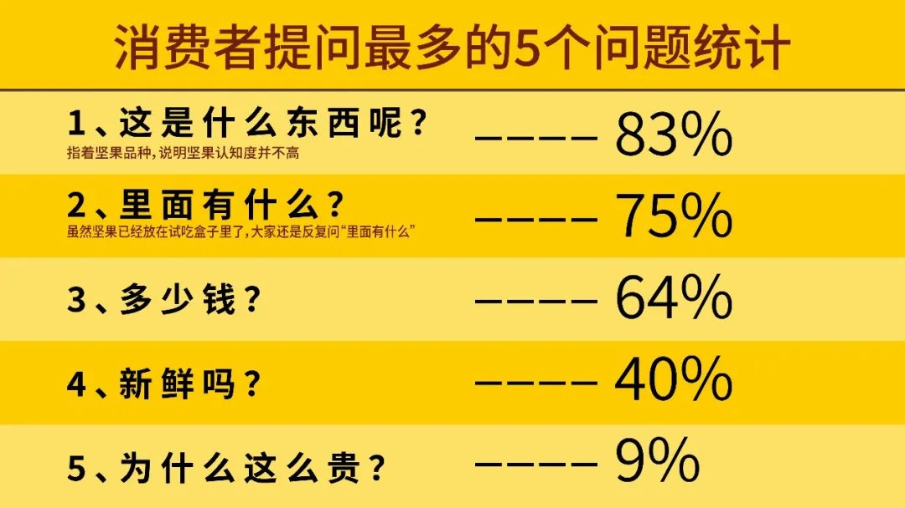
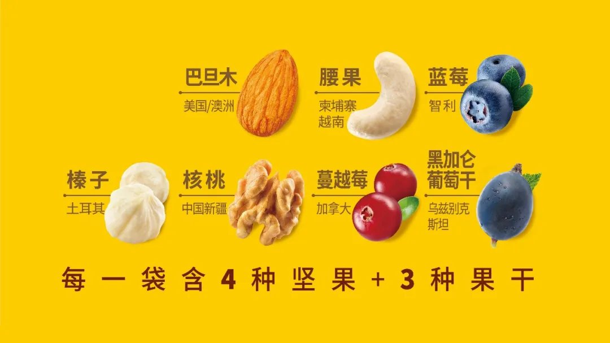
消费者接收到信号后，又得不到有价值的信息和行动指令，大大提高了消费者的选择成本，那我们要解决这个问题。
▲超市货架上的每日坚果包装雷同，都在拼坚果
对包装进行重新进行超级符号编码华与华的超级符号方法不仅仅是品牌超级符号，一切传播都是符号的编码和解码，一个包装设计就是一个符号编码，我们要找到那个对顾客最有影响力、最有效的符号，进行编码。经过长时间扎根一线的销售经验，我们把最能打动消费者购买的文案全部陈列在了我们的产品包装上，并在包装文案上实现 3 个购买：购买理由、购买指令、购买指南。除了为洽洽制定全新的顶层战略及创意工作外，洽洽小黄袋每日坚果的包装设计是决定此次坚果战役成败关键。销售的基本原理，就是流量转化。包装设计，就要让受众站在货架前，看见包装的时候，转换为购买者。
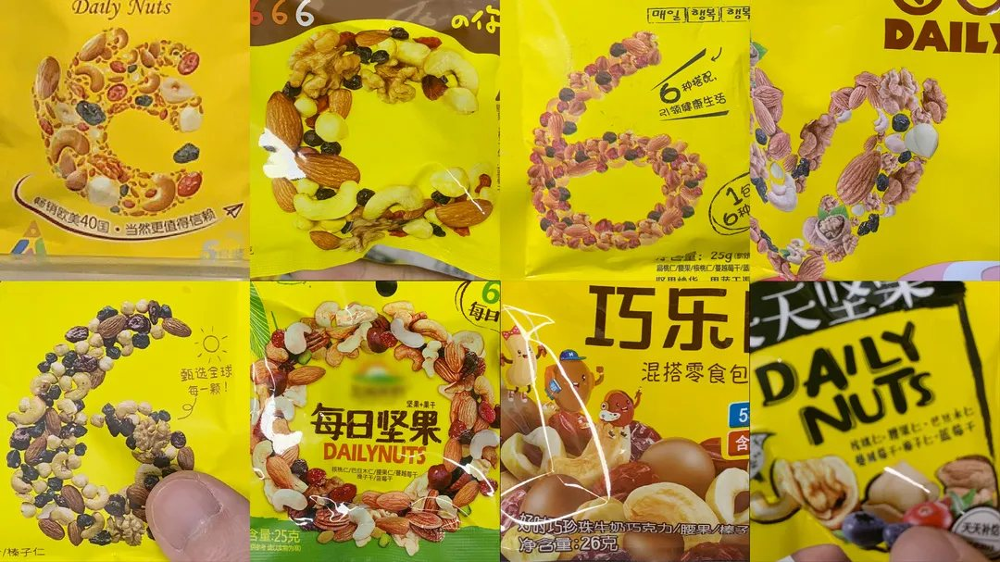
▲洽洽小黄袋包装设计的 10 大机关
广告语的底层逻辑是修辞学华与华两大核心技术——词语的技术和符号的技术，我们先通过“词语的技术”为它进行信息的重新编码，让效率最大化。那如何进行广告语的编码呢？我们说广告口号的底层逻辑是——修辞学。什么是修辞学？亚里士多德说：“修辞是说服人相信任何东西，以及促使他行动的语言艺术”，也可以理解为：说服人行动的语言艺术，目的在于行动。
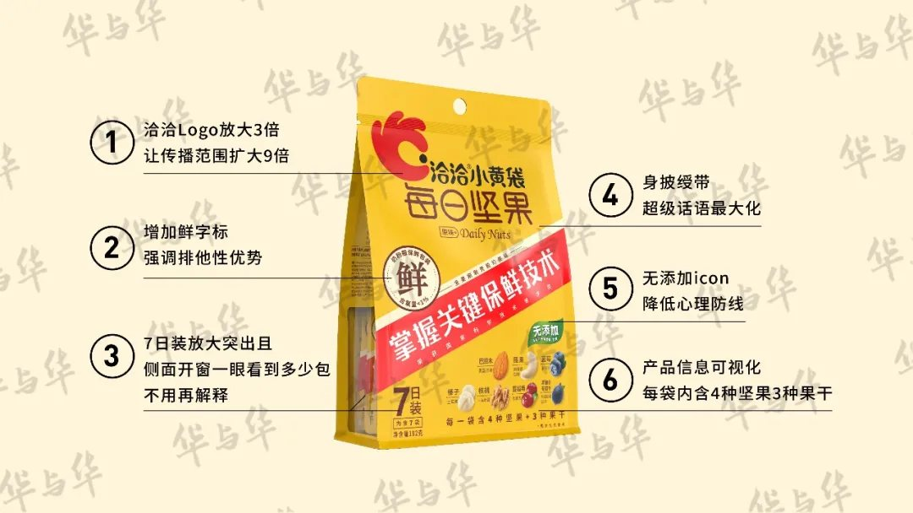
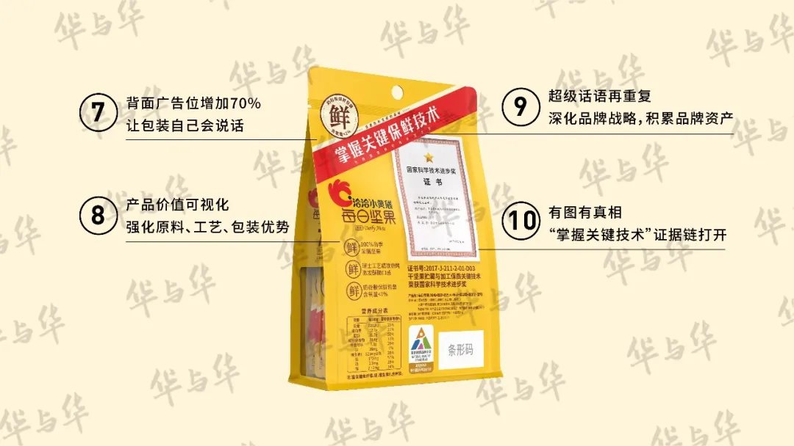
对于广告来说，前面半句可以不要，只要“促使人行动的语言艺术”就可以了，做广告不是为了让人相信，而是要绕开人们的心理防线。所以亚里士多德说，修辞学是天才的活，但是也可以通过长期专业的训练来学习。修辞的关键在于要找到一种能够绕开人心理防线的句子。我们去打广告、卖东西，消费者天然会对我们产生心理防线，但是有一些语言的艺术形式能够绕开人的心理防线，让消费者自动接受、自动去行动，我们把它称为品牌谚语，也叫品牌口号。
▲洽洽品牌谚语
定位不是营销策划，而是企业家的观点一家企业的定位如果是靠咨询公司策划出来，然后拿着这个定位去说服消费者，那等于是假的。
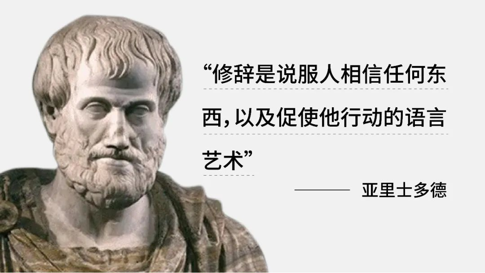
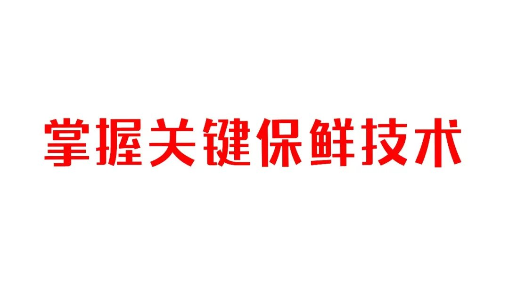
真正的定位是一个人在他年轻的时候立志要做什么，这就是他的人生定位，然后当他从事这份职业时，他认为这个职业应该怎么做，这个就是他的职业定位。洽洽在行业内做了 20 年的坚果，他认为坚果应该怎么做，那才是他的定位。我们要找到洽洽的本源，我们不是顺应市场力量，也不是去适应市场力量，我们就是市场力量本身。洽洽董事长陈先保认为，坚果最重要的就是保鲜，洽洽在行业内做了 20 年的坚果，对坚果的保鲜有相当严苛的要求。正是由于这严苛的要求与投入， 2017 年 12 月，洽洽在“干坚果贮藏与加工保质关键技术及产业化”方面荣获了国务院颁发的国家科学技术进步奖。
我们常说，营销策划不是看竞争对手，而是看自己有哪张牌可以打。正是洽洽董事长长期以来对产品品质的坚守，才造就了今天的洽洽，这既是企业的价值壁垒，也是当下行业的最高本质，也是企业真正的定位。当我们看到这个证书后，就把保鲜给找了回来。华与华为洽洽提出了“掌握关键保鲜技术”的品牌谚语。不仅建立了洽洽产品的竞争壁垒，更是回归了整个坚果行业的本质。
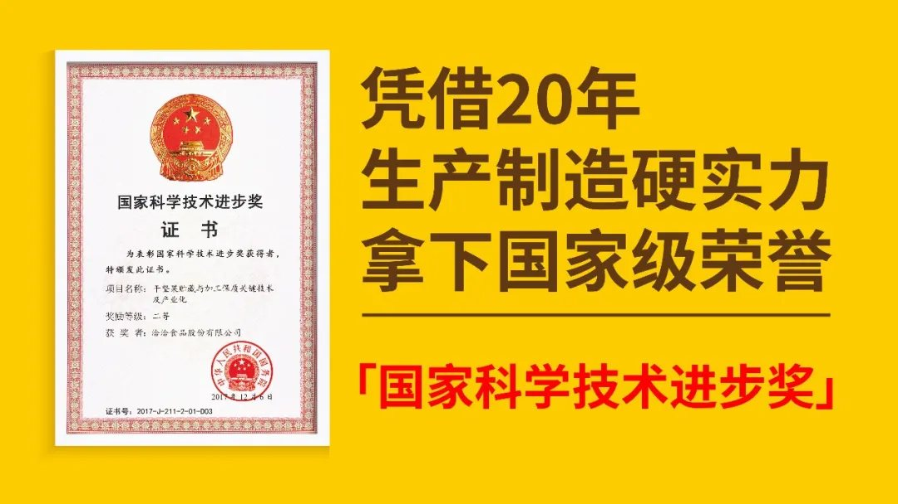
同时运用修辞学的技术，通过“掌握”、“关键”、“技术”这三个词语所释放的强大信号，让文字的编码与解码效率做到极致。这个定位既不是研究了竞争对手，也不是研究了顾客，而是向内看，看洽洽自己到底是怎么想的。德鲁克说：“企业是由人创造和管理的，管理是设法让企业顺应市场力量是无稽之谈，是管理者不仅发现这些力量，而且用自己的行动，创造了这股力量。”华杉说：“很多我们看起来以为是定位的成功，其实都是修辞的成功。”洽洽的成功，不是靠定位“保鲜”，而是靠“修辞”很多人说洽洽是定位在“保鲜”上面，所以成功了。但他们却不知道，洽洽成功的原因不是定位保鲜，而是修辞的成功。是“掌握”、“关键”、“技术”这三个词语释放的信号发挥了作用，它的本质原理是修辞。比如说，王老吉的成功很多人说是定位“预防上火”的成功，但如果他把广告语“怕上火，喝王老吉”改为“预防上火，喝王老吉”你觉得它还能卖出去吗？根本就卖不到现在的销量。王老吉的成功是“怕上火、喝王老吉”这句话的修辞让顾客行动了，但由于他不是自觉地掌握并且运用了修辞技术，只是本能地运用了这个修辞手法，成功后也没意识到自己成功的关键是修辞，所以人们总结成功后的经验，往往得到的也是误会。同样“爱干净、住汉庭”的成功也不是因为定位了“干净”，真正起作用的是“爱干净，住汉庭”这六个字的词语组合，让编码和解码的效率及行动指令最大化、极致化。
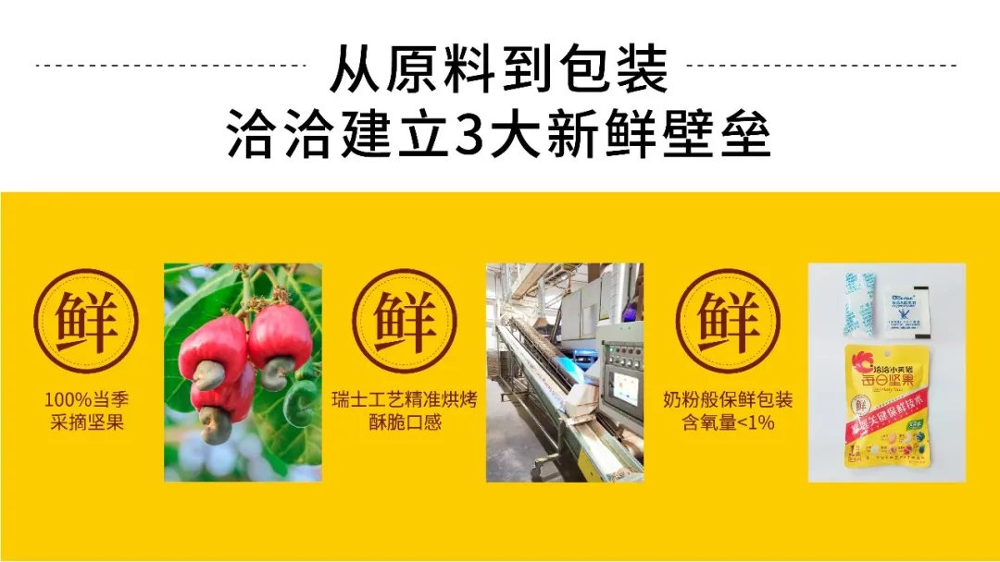
洽洽在华与华策略成功后，甚至还有人跟风叫作“新鲜零食专家”，以为可以抢占“新鲜”这个定位。这不仅没有先知先觉，也没有后知后觉，从头到尾都是不知不觉。我们的成功是在于：“掌握”、“关键”、“技术”这三个词语释放的信号发挥了作用，它的本质原理在于修辞，这才是成功的真因。创造“红绶带”的超级符号，建立终端货架优势有了 “洽洽，掌握关键保鲜技术”的品牌谚语后，我们又抓住了一个荣誉符号——绶带。我们把这个全世界都认识、熟悉、喜爱的人类文化符号，整体编码成为洽洽品牌和包装的超级符号，最终在终端形成视觉强制性，快速抓住消费者的眼睛，让我们的产品能迅速被发现，这背后的逻辑就是寻找有效的图形符号编码。
为什么要时刻保持货架思维？其目的就是要找到并设计出最高效的编码与解码符号。
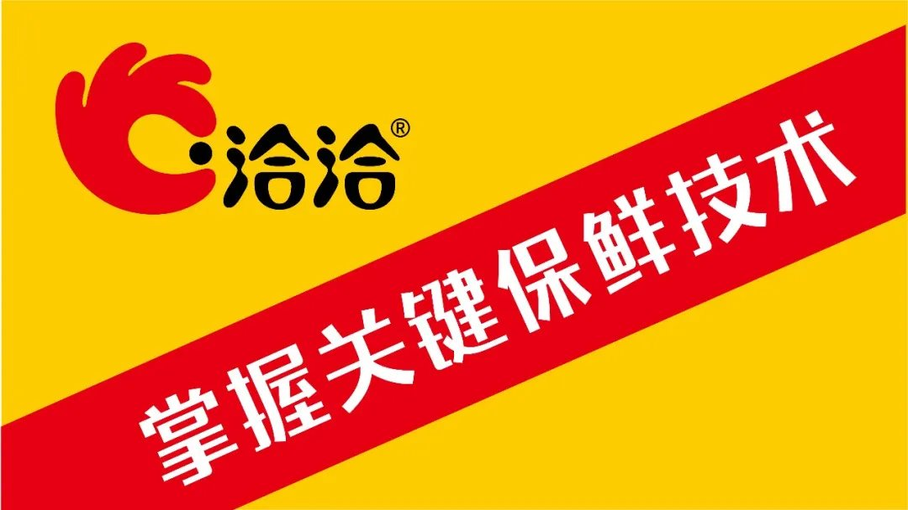
产品结构就是企业战略路线图
这里我们所指的企业战略，主要是业务战略与产品战略。产品战略包含三个层次，华与华方法称之为产品战略三角形。1 ）产品结构：要展开哪些业务、哪些产品，形成什么样的产品家族；2 ）每一支产品扮演的战略角色，和承担的战略任务；3 ）推出的战略次序：先做哪块业务，哪个产品，后做哪块业务，哪个产品。
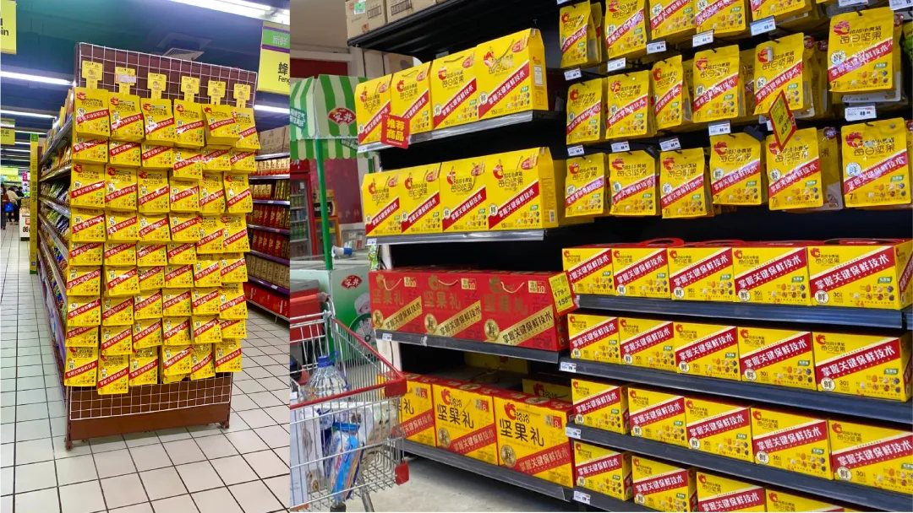
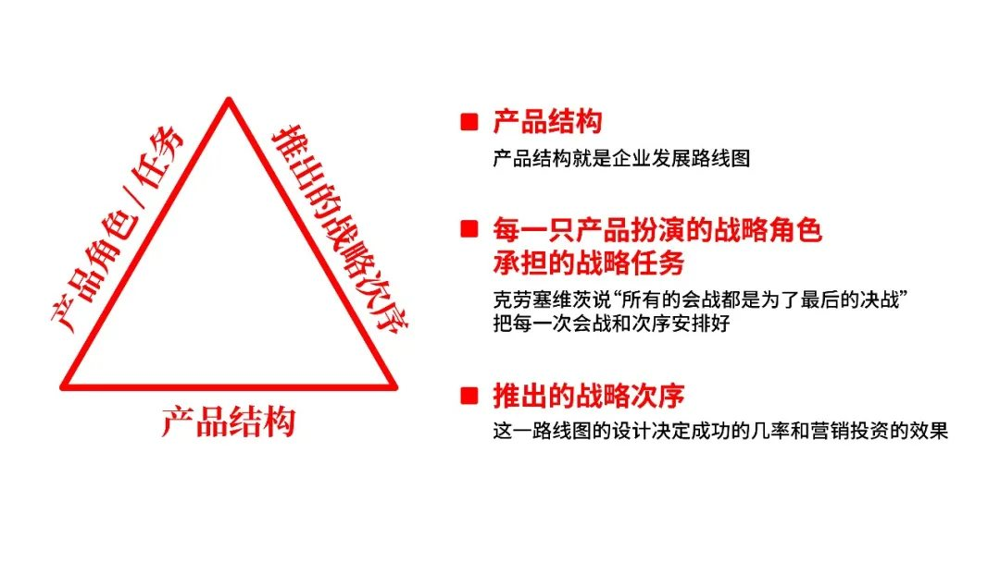
▲华与华产品战略三角模型
企业家好比一个将军，每一支产品，或者说每一块业务，就像一支部队。在战场上，我们的目标是全面胜利，而每一支部队有不同的战斗任务，有投入战场的先后次序。那么，要把每一次会战和次序安排好，以最低风险和最低的代价获得会战的成功。著名军事理论家克劳塞维茨说：“所有的会战都是为了最后的决战”。那么，要把每一次会战和次序安排好。华与华说：“产品结构就是企业战略路线图。”产品结构和推出次序就是华与华围棋模型：金角、银边、草肚皮。所以在华与华方法中，我们用中国人的战略游戏——围棋，将企业战略路线可视化。战略就是下围棋，金角银边草肚皮我们把企业战略路线图称为棋局上的金角、银边、草肚皮。1 ）金角是根据地，是核心业务，是竞争壁垒；2 ）银边是围绕一个核心业务、核心产品，建立起来的一条产品线，一个业务组合；3 ）整个棋盘是我们定义的一个品类市场，而草肚皮是我们的品牌势能最终能覆盖的业务范围。我们建立起金角银边就能够在整个市场获得压倒性优势和实现全品类覆盖。在洽洽项目上，我们也是通过华与华企业战略围棋模型，构建起洽洽坚果的百亿事业版图。
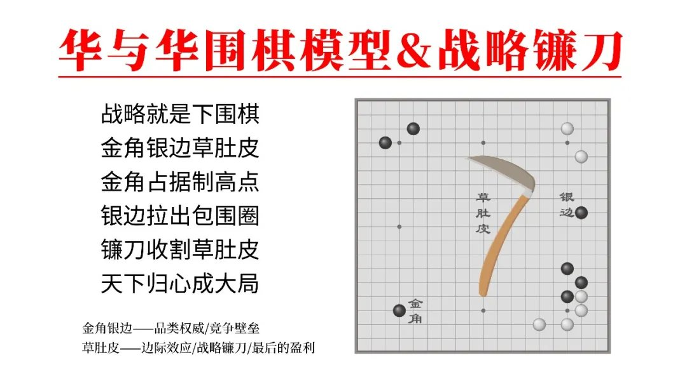
▲华与华战略围棋模型
金角占据制高点，成功扎根坚果业务洽洽坚果的第一支金角产品，洽洽小黄袋每日坚果。金角是根据地，是企业的核心业务，也是竞争壁垒。所以我们将洽洽当时自身在坚果品类的第一支营收主力产品：洽洽小黄袋每日坚果，作为洽洽布局坚果行业的第一支金角产品。洽洽小黄袋所扮演的战略任务是开疆辟土，建立洽洽坚果品牌，成功切入坚果品类的战略任务，同时承接起洽洽在坚果行业拳头产品的战略角色，为洽洽今后其他的坚果类产品创造平台与条件。
▲洽洽企业战略围棋模型——金角产品
银边拉出包围圈，释放品牌边际效益
洽洽每日坚果的银边产品：洽洽益生菌每日坚果在做活第一支金角后，我们又再次通过符号的编码与解码，成功设计洽洽益生菌每日坚果的产品包装，复制洽洽小黄袋成功的真因。以包装为战略重心，将超级符号“红绶带”与超级口号“掌握关键保鲜技术”应用到洽洽益生菌每日坚果的产品包装上，共享洽洽超级符号的品牌资产与品牌红利；并突出“特
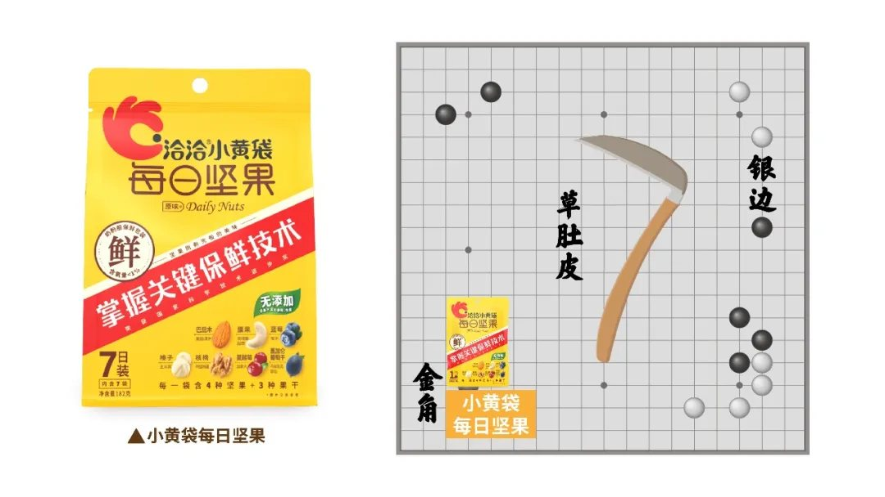
别添加 10 亿活菌”的产品价值，提出“益生菌加坚果，吃一样补两样”的购买理由。围绕每日坚果这条银边，实现风味化的产品创新，释放品牌边际效益。
▲洽洽企业战略围棋模型——银边产品
银边拉出包围圈，释放边际效益对于企业的银边产品，它的作用是释放品牌边际效益，而释放品牌边际效益的前提条件就是要建立超级符号，开启品牌储蓄罐。我们也常说超级符号是起点也是终点，品牌始于符号，最终成为符号。因此，作为银边的洽洽益生菌每日坚果在没有任何广告的情况下，上市第一个月，销售就轻松破了千万，上市第二个月销售又翻了一倍。从执行来反推方案，减少废动作，节约时间和金钱的成本。随着洽洽益生菌每日坚果销售的巨大成功，我们很容易就想到是否要投资广告把它做大？我们的答案是不需要。第一，你必须要明确你手里到底有多少资源？我们时常会听到这么一句话“企业要在传播上要投入足够多的资源，将定位植入顾客的心智中去”，可是这句话成立的前提是企业要有足够多的资源，而足够的传播资源是根本不存在的，你会发现永远是在资源不够的情况下工作的！
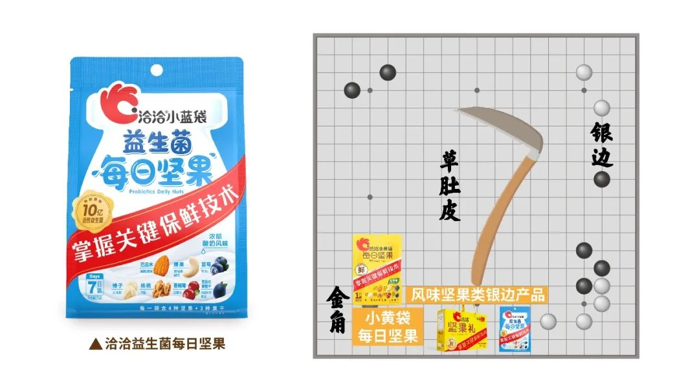
第二，占领心智不是一劳永逸，是持续投入。如果企业需要持续投入所谓足够的传播资源，那世界上没有任何生意可以覆盖如此庞大的传播成本，因为这是不成立的。对于益生菌每日坚果来讲，如果想要上广告，那我们先要考虑增加多少费用的广告？是要把预算加倍？还是拿走原来小黄袋每日坚果的广告去打新品？这两个产品之间的关系，是因为小黄袋每日坚果的成功带动了益生菌每日坚果的销售，小黄袋每日坚果的成功是因为投资了“有油哈味，就是保鲜不到位！洽洽掌握关键保鲜技术”这句话，所以我们在这句话上面的投资是固本，持续投资我们的本就越来越厚。
益生菌每日坚果是一种产品组合的创新，是很容易模仿的，而真正的品牌是无法模仿的。所以我们的本越厚，别人即使模仿我们的益生菌每日坚果，他也难以替代该产品的位置。反之如果我放弃了对小黄袋每日坚果的投资，就等于放弃了对“本”的投资，去投资枝叶，最后反而会失去连接我品牌文化原力的通道。为品牌“培根固本”，这才是正确的投资！所以，企业的全部预算都应该投资给小黄袋每日坚果，那如果我们的预算能够加倍，那就应该继续加倍投资原来的本，为品牌“培根固本”，这才是正确的投资。华与华的真正价值在于：临大事、决大疑、定大计。因此，和华与华合作 7 年的客户西贝董事长贾国龙就说到：咨询的价值不在于咨询公司提供的方案，而在于过程，过程中的相互影响，和关键决策的商量。
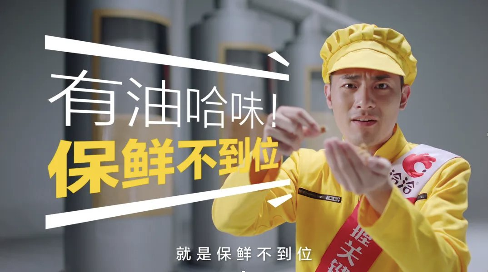
华与华和企业合作的价值，不仅仅是提供咨询方案，还包括企业经营发展过程中的每一步动作应该怎么去走，这种过程中的决策价值有时会比咨询方案更有价值。
咨询公司也要给客户派活儿
华与华不仅是解决方案的供应商，也是“任务供应商”。华与华不仅仅是接受客户的派活，我们也会主动给客户派活儿。在洽洽项目中，我们还成功发掘洽洽早餐每日坚果燕麦片，把它作为洽洽坚果第二支金角产品，重新包装后推入市场。破心中“贼”，为企业做心理咨询王阳明说：“破山中贼易，破心中贼难。”我们走多少弯路，就是因为心中的一些“贼”，这些“贼”，就是一些错误的思想，莫名的纠结。本来靠常识一眼就看明白的，甚至看都不用看就知道该怎么做的，因为这些“贼”的存在，反而把自己给搞得不会了，所以我们经常是在给企业做心理咨询。文章开头讲到“洽洽在消费者心智中定位是瓜子怎么办”的问题，跟消费者心智一点关系没有，是自己心智乱了，是心中“贼”。接下来要说的每日坚果燕麦片的问题，也是心中“贼”，有纠结！
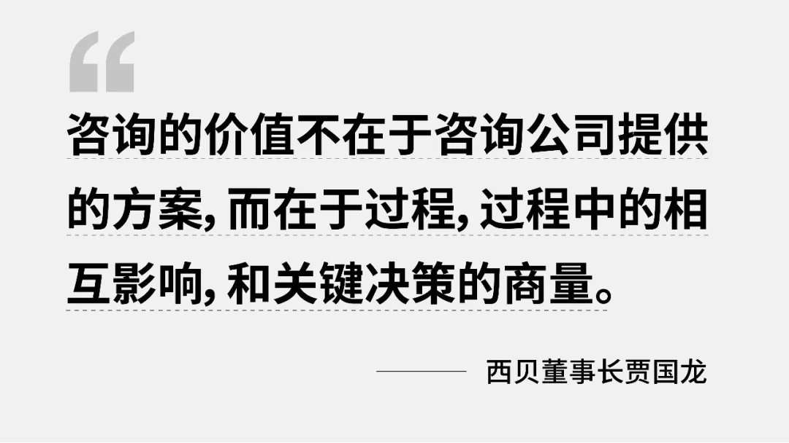
在成功做活第一支金角和银边后，洽洽就已轻松坐稳中国线下坚果第一品牌，这时候我们要开始未雨绸缪，为未来做规划。这时我们发现了一款洽洽原有的产品，叫做“坚果麦克斯·每日坚果燕麦片”。当我们看到这款产品的时候，就知道这是可以发大财的产品。但是，一看到之前的包装，就看到了策划设计者心中的“三大纠结”。
首先，洽洽的产品人想到了一个伟大的产品开发——每日坚果燕麦片，这是个极其伟大的创意。但又受到一些错误理论的影响，觉得燕麦是个新品类，那就得用一个新品牌，然后就用了“坚果麦克斯”这个品牌名，“麦克斯”是根据英文“ Max ”直译来的，这是第一个纠结。第二，那么有了坚果麦克斯这个品牌之后，他们心中的良知良能告诉他们，如果不放洽洽的商标，就卖不出去，就像当初刚做小黄袋每日坚果时也是使用了洽洽的品牌，于是他们放上了洽洽的商标。但放上洽洽商标之后，第三个纠结又来了。觉得这是另外的品类，好像不能用洽洽的商标，于是又在下面增加了“洽洽荣誉出品”，所以这背后都是心中纠结，那么华与华就是来把这“三大纠结”打破的。重新命名：洽洽早餐，迈入早餐赛道基础充分的市场研究之后，我们决定把这款产品重新命名为：洽洽早餐·每日坚果燕麦片，并放大洽洽的品牌信息，让人一眼就知道这是洽洽家的。
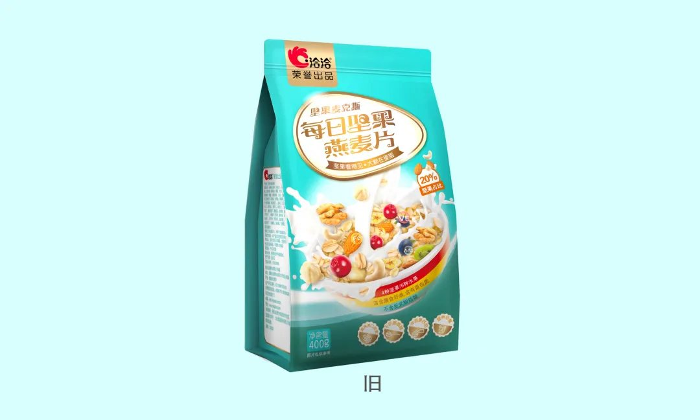
同时继承“洽洽，掌握关键保鲜技术”的品牌资产，即建立了包装符号的统一，又能让他享受到前面品牌资产所带来的边际效益，还能让洽洽早餐的包装反过来为“掌握关键保鲜技术”进行二次投资，可以说是一箭三雕。
因为洽洽早餐是以“坚果加麦片”的产品创新组合，所以我们还为它提出了“坚果加麦片，营养更全面”的购买理由，重新设计后作为洽洽坚果的第二支金角产品打入市场。
新包装上市后，马上就动销了，上市 100 天，业绩突破 8 位数，环比增长 204 %，再次取得耀眼的增长数据。
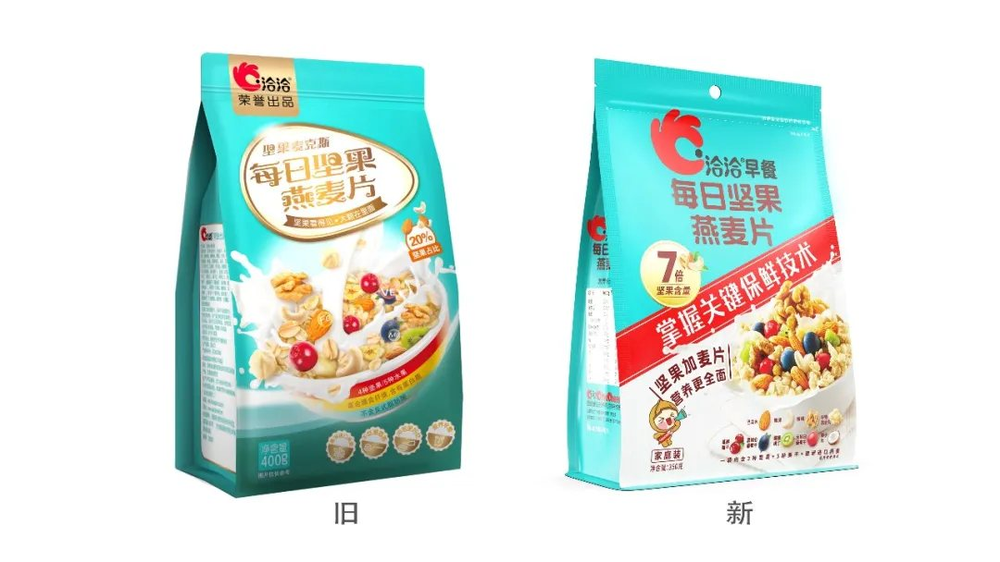
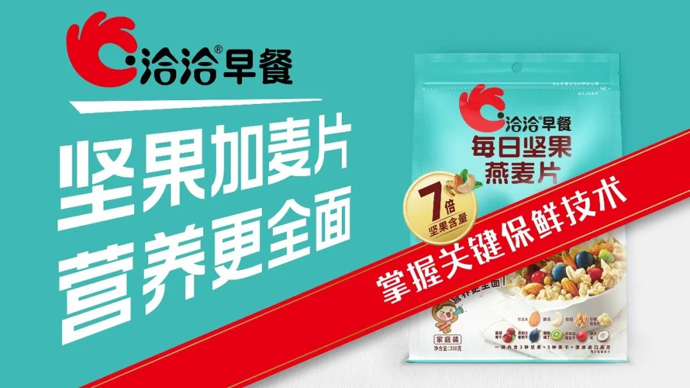
▲洽洽坚果战略围棋模型
与洽洽合作的 2 年时间，我们成功帮助洽洽建立起第一支金角产品：洽洽小黄袋每日坚果，通过找对课题，找到真因，抓住包装这一快消品行业的战略重心，一战而定；并顺着洽洽小黄袋占据的根据地，快速拉出银边：洽洽小蓝袋益生菌每日坚果，释放边际效益，成功建立每日坚果品类包围圈。同时为洽洽发掘出第二支金角产品：洽洽早餐每日坚果燕麦片，以替代品的身份进入麦片市场去替代其他燕麦片产品，切入坚果早餐品类的战略产品，并承担起在坚果早餐产品市场的战略任务。并顺着洽洽早餐每日坚果燕麦片占据的根据地，逐步拉出一条坚果早餐的品类银边。最终通过产品为洽洽坚果成功建立起百亿事业版图，用“三驾马车”（洽洽小黄袋每日坚果、洽洽益生菌每日坚果、洽洽早餐每日坚果燕麦片）领跑洽洽百亿产品版图。
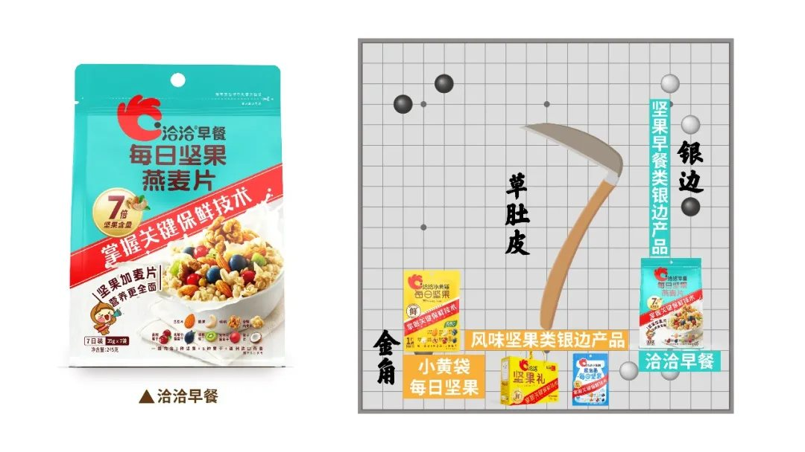
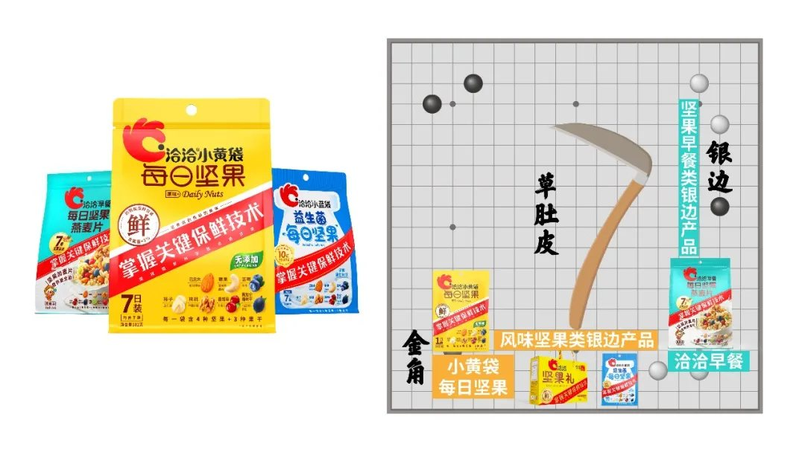
充分发挥咨询公司的跨行业经验
在洽洽“三驾马车”大获成功的同时，我们对洽洽坚果礼盒产品也进行了再开发。对于快消品行业，年货节绝对是全年销售中的黄金时段，那如何针对年节礼盒市场来进行产品开发呢？这也体现出咨询公司的另一大价值：咨询公司的跨行业经验。因为每个企业所处的行业不同，所掌握的信息也主要来自于自身所在行业。比如礼品市场，很多快消品企业其实严重缺乏对礼品市场的经验。而作为咨询公司，早年间华与华策划过大量保健品礼盒行业品牌，比如西洋参、黄金搭档、黄金酒等品牌，所以我们为也洽洽成功注入保健品行业做礼盒产品的核心经验，相继指导开发出洽洽坚果礼、每日坚果礼等礼盒类产品。
开发策略牢牢基于中国礼盒包装的三大关键：第一要大、第二要沉、第三要看起来贵！比如像洋参含片礼盒，因为本身产品的克重较轻，产品又是保健礼品，所以会在包装里面放两瓶鸡精或液体产品来增加包装的重量，这样的策略能够让顾客一上手就提着有分量感，送礼的时候也倍有面儿，而这背后既是基于人性的洞察，也是对保健品礼盒行业的经验。所以我们建议在坚果礼盒的产品包装内一定要增加液体。比如添加每日坚果乳产品来增加产品分量，这样既有份量，也让顾客觉得更有价值，送礼有面子。
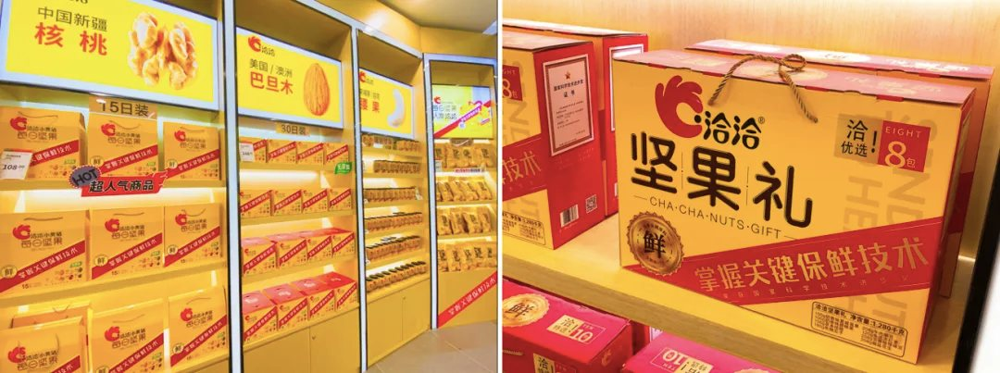
每日坚果礼盒产品一经上市，就取得了巨大增长。其实这背后，都是咨询公司跨行业的经验。
本文总结洽洽案例是华与华在快消行业“包装设计+产品战略+企业战略+品牌营销”一体化的代表案例，以包装设计为起手式，一举抓住快消行业的战略重心，一战而定， 2 年内企业市值增长近 4 倍！产品结构就是企业战略路线图，在华与华推动洽洽小黄袋成为金角产品后，又快速拉出风味坚果和坚果礼的品类包围圈，同时设计开发洽洽早餐坚果麦片产品成功打入早餐市场，销售环比 200 %增长，用“三架马车”全面领跑洽洽坚果的百亿事业版图。所以我们总结，华与华和洽洽合作 2 年，做了 5 大关键动作：第一，以包装设计作为战略重心与决胜点，用超级符号的符号编码和修辞学的广告口号“洽洽，掌握关键保鲜技术”打胜洽洽每日坚果第一仗。第二，以金角（小黄袋每日坚果）、银边（益生菌每日坚果）收获边际效益。第三，成功发掘洽洽早餐，开辟新赛道，走向早餐市场。第四，广告投资关键决策，为品牌培根固本。第五，充分发挥咨询公司的跨行业经验，成功导入保健品礼盒经验，决胜年节战役。
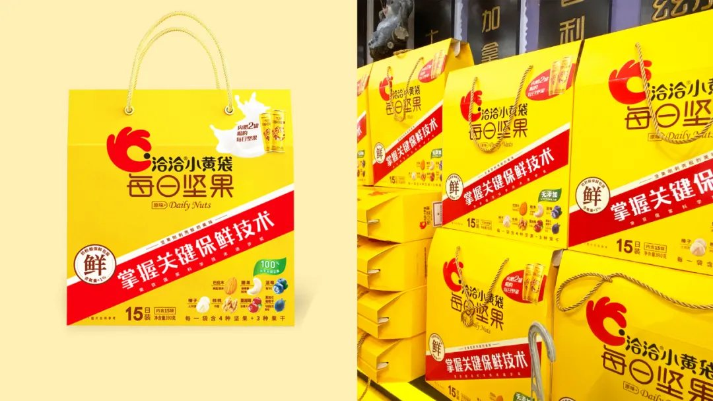